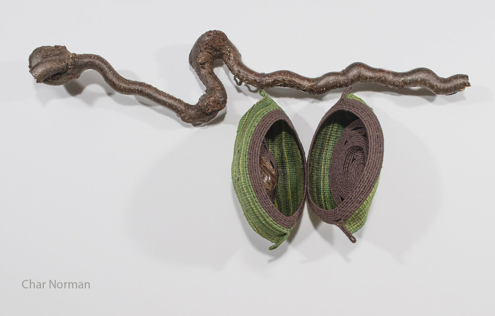

Written By Char Norman
Inspiration from the Rainforest
It's easy to sit in a comfortable armchair dreaming of saving the world or at least having some impact on the environment. It's quite another thing to walk through ancient forests and along the Amazon rainforest basin, experiencing natural forces at work.
Traversing an area that sustains our life on earth is a humbling experience not to mention the incredible spirituality and inspiration seeping into one's soul. As a lifelong environmental artist, I have done just that-worked in the studio trying to impact my audiences' awareness of the natural world without fully experiencing the real thing.
Of course, I was well aware of the importance of the rainforest and its biodiversity, but It was not until I traveled to the rainforest, that I truly felt the deeper connection to the environment. An eyewitness account and meeting the indigenous peoples was beyond anything I could have imagined. The deep connection and understanding of the ecosystem by these people are things that must be preserved. They are truly the keepers of the ancient knowledge of plants, animals and medicinal practices that can possibly have a huge impact on western attitudes, lifestyles, and health.
I don't pretend to have gained a working knowledge of the rainforest and its treasures but did witness enough to know that there is a great deal to be gained by its preservation and support of the indigenous tribes living within its borders.
Upon return, my own work as an artist, drew upon the inspiration and spirituality felt in the rainforest. The colors, shapes, nuances of meaning have all manifested themselves in work which I hope will alert others to the importance of environmental awareness and stewardship.
I am looking forward to a future trip to the Amazon, learning more about the treasures within and the people who sustain and are sustained by the rainforest, and creating more work addressing the need to preserve and learn from the environment.
Char Norman